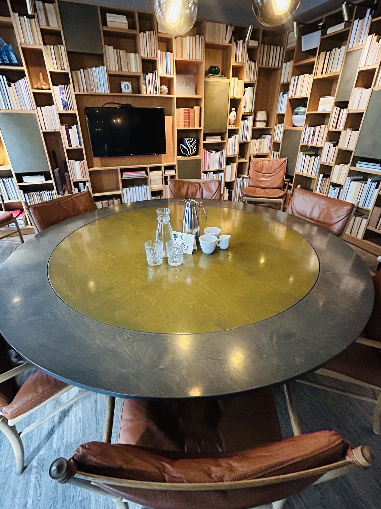

Leadership Experiences
Workshops and development programmes that help leaders build self-awareness, emotional intelligence, and stronger ways of leading. Grounded in your organisational reality.
Most leadership challenges aren't strategic. They're human. Experience-led development that helps leaders understand themselves, communicate clearly, and bring out the best in the people around them.
Start a conversation →I'm Rowena Doyle.
I've spent 15 years developing leaders inside global organisations, and what I've learned is that the best leaders aren't the most technically brilliant. They're the ones who understand themselves well enough to lead others.
That's what Reframd is built on.

Most experienced leaders have the knowledge. They've navigated growth, managed change, delivered results. But at a certain point the work becomes less about strategy and more about people.
How you communicate. How you show up under pressure. How your team functions, or doesn't. How you lead when there's no clear answer.
That's where most development falls short. Generic content, abstract models, programmes that don't reflect the reality you're actually in.
When leaders do the real work, building self-awareness, understanding their impact, strengthening how they connect, everything shifts.
Conversations become clearer. Teams become more connected. Leadership feels less reactive and more grounded.
Not a one-day inspiration hit. Capability that lasts.
Everything shifts when leaders do the real work.
We start with a conversation. What's actually going on? What are your leaders navigating? What does good look like for your organisation right now?
No off-the-shelf programmes. Everything is shaped around your people, your pressures, and the outcomes that matter.
Through workshops, development journeys, advisory, or community, we build the conditions for leaders to reflect, connect, and lead with greater clarity.
Workshops and development programmes that help leaders build self-awareness, emotional intelligence, and stronger ways of leading. Grounded in your organisational reality.
Designed experiences that strengthen how teams communicate, collaborate, and function, particularly during periods of growth, change, or transition.
Facilitated sessions and advisory partnerships that help leadership teams think more clearly, challenge assumptions, and move forward with confidence.
Rowena has a rare gift for leadership. She didn't just manage our team, she made us feel so talented and capable that we wanted to work harder just to prove her right. Aastha Gauba · Former Global Training Manager, Pandora
Three considered ways into the work — for women in leadership making space to slow down, recalibrate, and lead from a steadier place.
A complimentary 30-minute conversation for women in leadership.
A guided space to step out of the noise of leadership and reflect more honestly on where you are now.
We can explore:

A 1-hour online session for clarity, awareness, and deeper self-connection.
Using reflective coaching prompts and Reframd's recalibration tools, this session creates space to slow down and hear yourself again.
Women often leave with:
A one-day recalibration experience for women in leadership.
A carefully curated day for women over 40 navigating leadership, ambition, identity, and what comes next.
Not a conference. Not a workshop. Not a networking event. A space to slow down, reconnect with yourself, and explore a more sustainable way of leading.
Join the waitlist for early access and first-session pricing.
Find out more
I've spent over 15 years developing leaders and building learning experiences inside global organisations. I've led teams, designed programmes from the ground up, and worked closely with leaders navigating the kind of complexity that doesn't come with a clear answer.
Along the way I kept coming back to the same thing. The leaders who had the most impact weren't always the most experienced or the most qualified. They were the ones who knew themselves, their patterns, their impact, how they showed up for others.
Reframd grew out of that belief.
It's a space where leaders can pause, do the real work, and come back to their teams and organisations with greater clarity, confidence, and connection.
A handful of the questions that come up most. If yours isn't here, the answer is probably "let's talk."
Leaders, founders, and L&D or HR teams in organisations navigating growth, change, or complexity, particularly those who know that people and communication are where the real challenges live.
Everything is shaped around your context. No generic content, no pre-packaged models. The focus is practical capability that reflects the reality your leaders are actually in.
Leadership Experiences, Team Development, and Strategic Facilitation & Advisory. Each one is shaped to your context, whether that's developing individual leaders, strengthening how a team works together, or partnering at a strategic level. Engagements often draw on more than one.
It can include elements of all three. Workshops, advisory partnerships, leadership experiences, or speaking. The structure is always shaped around what's real for your organisation.
It varies. Some organisations start with a single workshop or keynote. Others develop longer-term leadership journeys or advisory partnerships. It's always built around your needs and timeline.
Yes. Much of Rowena's experience is with senior leaders navigating strategic complexity. The approach respects experience and creates space for deeper thinking, honest challenge, and greater clarity.
Yes. Rowena has worked globally for over 15 years and partners with organisations across different markets. Sessions can be delivered in person or virtually.
It's a space where leaders can pause, do the real work, and come back to their teams and organisations with greater clarity, confidence, and connection.
Speaking at your organisation or event, an advisory partnership, co-hosting a roundtable, a podcast conversation, or collaborating on written content. If you have something in mind, start a conversation.
If you're navigating complexity, growth, or change, and you know the human side is where it gets hard.
Tell me a little about what you're working through. I'll read every message myself and get back to you personally.
Or email rowena@reframd.co directly.
Your message is in. I'll be in touch soon.